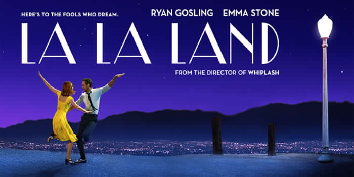

La La Land
Informazioni sul film
Regia: Damien Chazelle
Attori: Ryan Gosling, Emma Stone, John Legend, J. K. Simmons, Rosemarie DeWitt, Finn Wittrock, Sonoya Mizuno, Jessica Rothe, Callie Hernandez, Tom Everett Scott, Damon Gupton, Josh Pence, Jason Fuchs, Miles Anderson
Genere: Commedia, Drammatico, Musicale, Sentimentale
Anno: 2016
Durata: 2h 8m
Trama del film
Mia vive a Los Angeles e sogna di diventare un'attrice, ma al momento agli attori famosi prepara soltanto il cappuccino nella tavola calda presso gli studi della Warner in cui lavora per mantenersi. Sebastian, invece, è un musicista jazz che nessuno capisce e apprezza. I due si incontrano, o per meglio dire si scontrano, sotto il sole di una trafficata autostrada e poi, di nuovo, s'incontrano. Piano piano, tra loro nascerà una meravigliosa storia d'amore, ma la vita è complicata e non sempre al passo con l'amore...
Critica
Il film è stato accolto molto positivamente dalla critica. Sull'aggregatore di recensioni Rotten Tomatoes ha un indice di gradimento del 93%, con un voto medio di 8.6 su 10, basato su 80 recensioni. Il commento del sito recita "La La Land soffia nuova vita in un genere del passato con una regia sicura di sé in modo eccitante, interpretazioni forti e un irresistibile eccesso di cuore". Su Metacritic ha un voto di 93 su 100, basato su 53 recensioni. Peter Bradshaw di The Guardian ha lodato il film, dandogli cinque stelle su cinque e scrivendo che è "così felice e dolce, qualcosa che ti dà una carica di vitamina D". Todd McCarthy di The Hollywood Reporter ha lodato le performance di Stone e Gosling e scritto che "è quasi straordinario come Chazelle sia riuscito a creare un film del genere". Robbie Collin del Telegraph ha dato al film cinque stelle su cinque, scrivendo: "La La Land vuole ricordarci quanto siano belli i sogni semi-dimenticati dei tempi andati, quei sogni fatti solo di facce, musica e movimento. Ha la testa tra le nuvole, e per poco più di due ore, porta il pubblico lassù con lui".
Riconoscimenti
La La Land ha ricevuto 14 candidature ai Premi Oscar 2017, eguagliando il primato di film come Eva contro Eva di Joseph L. Mankiewicz e Titanic di James Cameron. Le candidature includono miglior film, miglior regista, miglior attore (Ryan Gosling), miglior attrice (Emma Stone), migliore sceneggiatura originale, migliore colonna sonora, due candidature nella categoria migliore canzone originale e altre ai premi tecnici. Ai Golden Globe 2017 il film ha vinto sette premi su sette candidature, stabilendo il primato di film che ha vinto più premi nella storia dei Golden Globe. Ha ottenuto inoltre 11 candidature ai Premi BAFTA, vincendone 5.